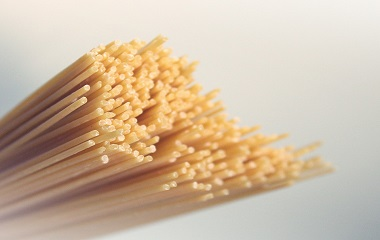
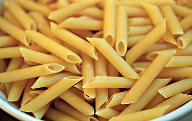
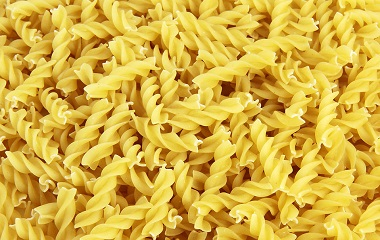

How to cook pasta
- Fill and kettle with water and boil.
- Pour the water into a large pot, add some salt and bring back to the boil.
- Measure out your pasta and cook for the time given on the packet. This will vary between 6 and 14 minutes depending on the pasta so it's important to check.
- When the pasta is ready, pour in a colander to drain the water away.
- Serve the pasta immediately. If you leave it sitting it will stick together.
How to make a simple tomato sauce
- Chop a few garlic cloves and fry them gently in a saucepan with a couple of table spoons of olive oil.
- After a couple of minutes add some chopped basil stalks (or a pinch of dried oregano if you don't have fresh basil).
- Pierce a whole red chilli a few times and add the to pan along with two tins of whole plum tomatoes. Make sure to leave the tomatoes whole for now.
- Season with salt and pepper.
- Leave on a very low heat to simmer for around half an hour.
- Remove the chilli and mash up the mixture to break up the tomatoes.
- Add a table spoon of red wine vinegar.